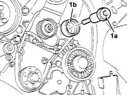
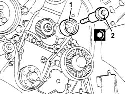

1032C30 Timing belt FIXED TENSIONER - R.R. with timing belt removed
- Path
- Procedures > 10 ENGINE > 1032 timing system > 1032C TIMING SYSTEM TENSIONERS > 1032C30 Timing belt FIXED TENSIONER - R.R. with timing belt removed
- Kind
- repair procedure (removal / refitting; the operation number is the code)
- Applies to
- engines: 2.4 JTD 20V; all production periods
- Interactive page
- https://sloeber94.github.io/elrnDB-lThss/en/#/850159
Applies to: engines: 2.4 JTD 20V; all production periods
 Removing
Removing
 Refitting
Refitting1. Undo the retaining bolt.
2. Remove the timing belt fixed tensioner.

Applies to: engines: 2.4 JTD 20V; all production periods
Refitting
Removing1. Position the timing belt fixed tensioner.
2. Tighten the fixing bolt to torque.
 | Value - daNm | Fastening | Component | Ø |
|---|---|---|---|---|
. | 5 | Bolt | FIXED TENSIONER | M10 X 1.25 |
